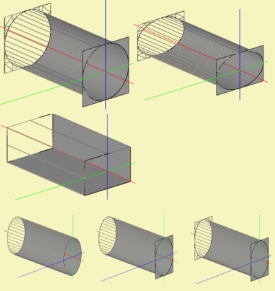

Form - Duct
| Home | BEM-Part |
 |
 |
 |
Duct works as an element-factory, which conveniently creates boundary elements for waveguides of constant cross-section. Duct is typically used for passive boundaries, however it also can be specified to perform vibration. Further, it can be used for boundary elements of an Interface.
Create a new Duct-component with the help of the New Component Form. The home of a Duct-component is page BEM. Edit an existing component by dbl-click its entry on page BEM or issue menu Edit/Parameters or press CTRL+E.
A Duct can inherit parameters from another Duct. A Duct-component is linked to its ancestor with the help of the Inheritance-Form.
Page - Name
On page Name provide the name of the component in form of a string. Further there is space for annotations.
Page Parameters
Dimension
Type of Cross Section
Specifies details of the shape of the cross section such as the a circle, a rectangle, an ellipse or an oval, respectively.
dD, WD, HD
dD is the diameter of a circular shape.
WD and HD are the dimensions of a rectangle. WD is the width and HD is the height. The particular outline can be selected with the help of parameter Type of Cross Section. The width is along the local horizontal direction. Use Rotate Axial of Scaling in order to rotate about its axis.
Length
Specifies the length of the duct.
Baffles
Type of Closing Cap
The Duct-component can create planes at its ends. Select from Open Duct, Front Closed, Rear Closed and Closed Duct.
Type of Outer Baffle
The local baffle helps to embed a circular shape into an otherwise rectangular environment. The baffle has the same size as the cross section. Select from No Baffle, Baffle at the Front, Baffle at the Rear and Baffle on Both Sides.
Page - Boundaries
Here you specify the acoustic properties of the boundaries of Duct-elements. Details are given in chapter Frame - Boundaries.
Page - Meshing
On this page you can control the way the finite element mesh is generated for the Duct. The Duct can only be meshed with the help of bifurcation (Meshing Type = Bifu). If not specified Duct uses Meshing parameters of its Parent, which can be a Subdomain or an Interface. These in turn default to global settings (see menu Global/Meshing...).
Spec Type: For a Duct, which is linked to another Duct from which it inherits parameters, there is the option to select from where to receive default values.
Edge Length and further parameters are described in chapter Form - Meshing.
Page - Position
A Duct is positioned by attaching it to a coordinate from a Node-database, by using mesh-file-planes or by using the Shift parameter of the Scaling feature. The mounting point is the center of the front side of the Duct.
Positioning and orientation is specified at page Position of the form and described in chapter Form - Position.
Page - Formula
All parameters of format floating-point can be assigned a formula. Please check chapter Form - Formula for further details. Formula-identifiers for Duct parameters are:
| Dimensions | |
| dD | Diameter |
| WD | Width |
| HD | Height |
| LenD | Length of duct |
| Driving | |
| Weight | Signal amplification |
| Delay | Signal delay |
| Meshing | |
| EdgeLength | Length of largest edge |
| EdgeLengthMin | At which to stop meshing |
| PointDistance | Steiner points of Delaunay |
| SkinnyAngle | Min angle at Delaunay |
| QuadRatio | Aspect ratio of quads |
| Position-Scaling | |
| RotateVert | Local rotation vertical |
| RotateHoriz | Local rotation horizontally |
| RotateAxial | Local rotation axially |
| OffsetAxial | Shift on-axis |
| RotateX | Rotation about x-axis |
| RotateY | Rotation about y-axis |
| RotateZ | Rotation about z-axis |
| ShiftX | Shift in x-direction |
| ShiftY | Shift in y-direction |
| ShiftZ | Shift in z-direction |
Scripting
The Duct can be specified inside a script.